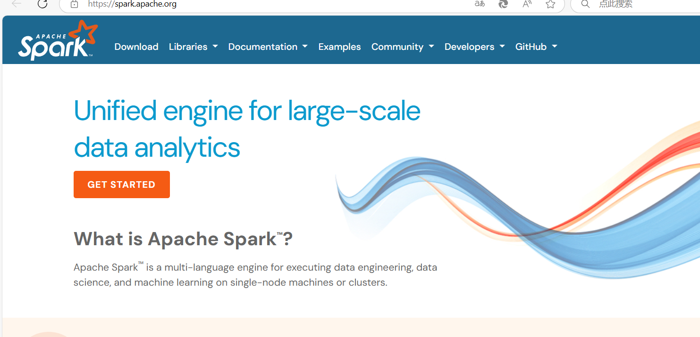
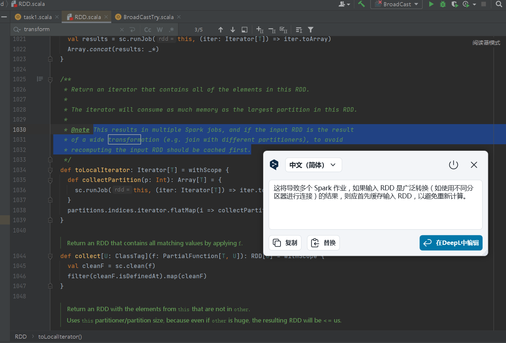
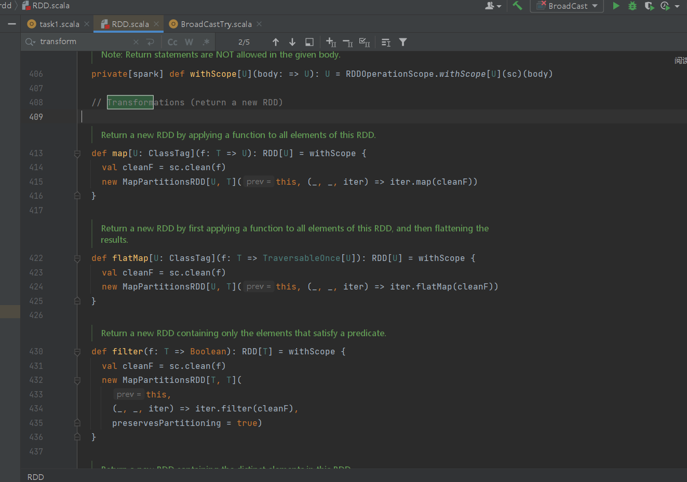

Saprk定义
Apache Spark 是一个多语言引擎，用于在单节点机器或集群上执行数据工程、数据科学和机器学习。

## Spark组件
Spark三大抽象数据结构
RDD:弹性分布式数据集，是 Spark 中最基本的数据处理模型。代码中是一个抽象类，它代表一个弹性的、不可变、可分区、里面的元素可并行
计算的集合。
- 弹性
- 存储的弹性：内存与磁盘的自动切换；
- 容错的弹性：数据丢失可以自动恢复；
- 计算的弹性：计算出错重试机制；
- 分片的弹性：可根据需要重新分片。
- 分布式：数据存储在大数据集群不同节点上
- 数据集：RDD 封装了计算逻辑，并不保存数据
- 数据抽象：RDD 是一个抽象类，需要子类具体实现
- 不可变：RDD 封装了计算逻辑，是不可以改变的，想要改变，只能产生新的 RDD，在新的 RDD 里面封装计算逻辑
- 可分区、并行计算
累加器：累加器用来把 Executor 端变量信息聚合到 Driver 端。在 Driver 程序中定义的变量，在
Executor 端的每个 Task 都会得到这个变量的一份新的副本，每个 task 更新这些副本的值后，
传回 Driver 端进行 merge。
广播变量：广播变量用来高效分发较大的对象。向所有工作节点发送一个较大的只读值，以供一个
或多个 Spark 操作使用。比如，如果你的应用需要向所有节点发送一个较大的只读查询表，
广播变量用起来都很顺手。在多个并行操作中使用同一个变量，但是 Spark 会为每个任务
分别发送
1
2
3
4
5
6
7
8
9
10
11
12
13
14
15
16
17
18
19
20
21
22
23
24
25
26
27
28
29
30
31
32
33
34
35
36
37
38
39
40
41
42
43
44
45
46
47
48
49
50
51
52
53
54
55
56
57
58
59
60
61
62
63
64
65
66
67
68
69
70
71
72
73
74
|
package RDD1
import org.apache.spark.util.LongAccumulator
import org.apache.spark.{SparkConf, SparkContext}
object task1 {
def main(args: Array[String]): Unit = {
val sparkConf: SparkConf = new SparkConf().setMaster("local[*]").setAppName("job3task1")
val sc = new SparkContext(sparkConf)
//通过文件生成RDD
val data = sc.textFile("hdfs://hadoop1:8020/Data01.txt")
println(data.map(
x => {
val student = x.split(",")(0)
student
}
).distinct().count())//学生数量
println(data.map(_.split(",")(1)).distinct().count())//课程数量
val value = data.map(
x => {
val student = x.split(",")(0)
val grade = Integer.parseInt(x.split(",")(2))
(student, grade)
}).filter(_._1=="Tom")
.groupByKey().map{
y=>{
y._2.sum/y._2.size.toDouble
}}
value.foreach(println) //Tom的课程平均分
val studentCourse = data.map(
x=>{
val student = x.split(",")(0)
(student,1)
}
).groupByKey().mapValues(_.size)
studentCourse.foreach(println)//学生选课数
val database = data.map(
x=>{
val course = x.split(",")(1)
(course,1)
}
).filter(_._1=="DataBase").groupByKey().map(y=>y._2.size)
database.foreach(println)//选择了DataBase课的学生
val avgGrade = data.map(
x=>{
val course = x.split(",")(1)
val grade = Integer.parseInt(x.split(",")(2))
(course,grade)
}
).groupByKey().mapValues(y=>{y.sum/y.size.toDouble})
avgGrade.foreach(println)//每门课的平均分
val dbCount:LongAccumulator = sc.longAccumulator("dbCount")
data.foreach { line =>
val course = line.split(",")(1)
if (course == "DataBase") {
// 每当课程为"DataBase"时，累加器的值加1
dbCount.add(1)
}
}
println("DataBase count: " + dbCount.value)
//累加器实现查找选择了DataBase课的学生
sc.stop()
}
}
|
1
2
3
4
5
6
7
8
9
10
11
12
13
14
15
16
17
18
19
20
21
22
23
|
package SprakReview
import org.apache.spark.broadcast.Broadcast
import org.apache.spark.{SparkConf, SparkContext}
object BroadCastTry {
def main(args: Array[String]): Unit = {
val sparkConf: SparkConf = new SparkConf().setMaster("local[*]").setAppName("广播变量练习")
val sc = new SparkContext(sparkConf)
val v = Array(1,2,3,4,5,6)
// 创建广播变量
val broadV:Broadcast[Array[Int]] = sc.broadcast(v)
//打印广播变量
println(broadV.value.mkString("Array(", ", ", ")"))
//销毁广播变量
broadV.destroy()
sc.stop()
}
}
|
Spark行动算子

Spark转换算子

map mapPartitions flatMap 区别
map
将处理的数据逐条进行映射转换，这里的转换可以是类型的转换，也可以是值的转换。
1
2
3
4
5
6
7
|
/**
* Return a new RDD by applying a function to all elements of this RDD.
*/
def map[U: ClassTag](f: T => U): RDD[U] = withScope {
val cleanF = sc.clean(f)
new MapPartitionsRDD[U, T](this, (_, _, iter) => iter.map(cleanF))
}
|
mapPartitions 将待处理的数据以分区为单位发送到计算节点进行处理，这里的处理是指可以进行任意的处
理，哪怕是过滤数据。
1
2
3
4
5
6
7
8
9
10
11
12
13
14
15
|
/**
* Return a new RDD by applying a function to each partition of this RDD.
*
* `preservesPartitioning` indicates whether the input function preserves the partitioner, which
* should be `false` unless this is a pair RDD and the input function doesn't modify the keys.
*/
def mapPartitions[U: ClassTag](
f: Iterator[T] => Iterator[U],
preservesPartitioning: Boolean = false): RDD[U] = withScope {
val cleanedF = sc.clean(f)
new MapPartitionsRDD(
this,
(_: TaskContext, _: Int, iter: Iterator[T]) => cleanedF(iter),
preservesPartitioning)
}
|
map 和 mapPartitions 的区别？
-
数据处理角度
Map 算子是分区内一个数据一个数据的执行，类似于串行操作。而 mapPartitions 算子是以分区为单位进行批处理操作。
-
功能的角度
Map 算子主要目的将数据源中的数据进行转换和改变。但是不会减少或增多数据。
MapPartitions 算子需要传递一个迭代器，返回一个迭代器，没有要求的元素的个数保持不变，
所以可以增加或减少数据
-
性能的角度
Map 算子因为类似于串行操作，所以性能比较低，而是 mapPartitions 算子类似于批处理，所以性能较高。但是 mapPartitions 算子会长时间占用内存，那么这样会导致内存可能不够用，出现内存溢出的错误。所以在内存有限的情况下，不推荐使用。
flatMap
将处理的数据进行扁平化后再进行映射处理，所以算子也称之为扁平映射
1
2
3
4
5
6
7
8
|
/**
* Return a new RDD by first applying a function to all elements of this
* RDD, and then flattening the results.
*/
def flatMap[U: ClassTag](f: T => TraversableOnce[U]): RDD[U] = withScope {
val cleanF = sc.clean(f)
new MapPartitionsRDD[U, T](this, (_, _, iter) => iter.flatMap(cleanF))
}
|
补充：mapPartitionsWithIndex 将待处理的数据以分区为单位发送到计算节点进行处理，这里的处理是指可以进行任意的处
理，哪怕是过滤数据，在处理时同时可以获取当前分区索引。
1
2
3
4
5
6
7
8
9
10
11
12
13
14
15
16
|
/**
* Return a new RDD by applying a function to each partition of this RDD, while tracking the index
* of the original partition.
*
* `preservesPartitioning` indicates whether the input function preserves the partitioner, which
* should be `false` unless this is a pair RDD and the input function doesn't modify the keys.
*/
def mapPartitionsWithIndex[U: ClassTag](
f: (Int, Iterator[T]) => Iterator[U],
preservesPartitioning: Boolean = false): RDD[U] = withScope {
val cleanedF = sc.clean(f)
new MapPartitionsRDD(
this,
(_: TaskContext, index: Int, iter: Iterator[T]) => cleanedF(index, iter),
preservesPartitioning)
}
|